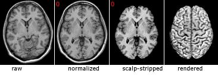
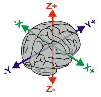

Atlas
Links
| Neuroanatomy Atlas | Introduction Atlas Links |
Index
Introduction
This neuroanatomy atlas shows regions on normalized MRI scans. Normalization is the process of warping a brain to match a standard size, orientation and shape of other brains. You can normalize MRI scans using programs like AIR, FLIRT or SPM. Once normalized, the overall shape of your MRI scan will approximately match those in this atlas. However, normalization preserves the unique sulcal features of each brain, so there will be some variation between your image and the images shown in this atlas. There is a great deal of individual variability even after normalization, so any atlas is only a rough guide to the shape and location of structures in an individuals brain. As I have noted before, secondary and tertiary sulci are not found in all individuals [Ono et al. 1990, Atlas of Cerebral Sulci]. Another benefit of normalizing brains is it makes it easy to complete an accurate 'scalp stripping' with brain extracting software (my MRIcro software implements Steve Smith's BET for this task). You can then create a useful volume rendering of the cortical surface. Typically, it is much easier to identify cortical sulci and gyri by looking at a rendered image of the brain's surface. This atlas shows you how to recognize these landmarks on a rendered MRI scan.
|  | Left: This figure shows how raw (original) MRI scans can be processed to make recognizing neuroanatomical landmarks easier. First, the image can be normalized, realigning the image so the overall shape of the image matches common atlases. Images can also be scalp-stripped, allowing the cortical surface to be rendered (making it easy to recognize many features). |
A great way to use this atlas is to download a free copy of my MRIcro software. This will let you view your own MRI scans, and MRIcro comes with the "ch2" image that is used throughout this atlas. The "ch2" MRI (referred to as 'single_subj_T1" by SPM users) is based on 27 T1 scans of a single individual. It is great for learning about brain anatomy, but it is probably of much higher quality than any other scans you will work with. Therefore, I also have illustrated the neuroanatomical regions on a more typical MRI scan: a single ultra-T1-weighted image (1.5 Tesla, MPRAGE sequence) from a volunteer at the University of Nottingham. This scan helps you identify brain regions by examining a clinical quality scan. Comparing ch2 to the clinical scan, you can also observe the variability in the location of structural regions following normalization. Due to popularity, anatomical definition, resolution and speed of acquisition, this atlas focuses on T1-weighted MRI scans. However, neuropsychologists plotting lesions should also examine the patient's T2 and proton density scans as well.
| It is worthwhile to describe the coordinate system used to define neuroanatomical locations of normalized images. The 'Talairach' coordinate system specifies locations relative to their distance from the anterior commisure (AC). The AC is a small but easy to spot region, making it an ideal origin for the coordinate system. Each location is described by three numbers, each describing the distance in millimeters from the AC: X is the left/right dimension, Y is the posterior/anterior dimension, and Z is the ventral/dorsal dimension. Therefore, the position 0x0x0 is precisely at the AC, while -32x21x10 is left (32mm), anterior (21mm) and dorsal (10mm) from the AC. In this atlas you will notice that axial slices are referred to by their Z coordinate and coronal images are referred to by their Y coordinate. Again, it is important to stress that normalization strives to retain the unique features of each individual brain, and therefore Talairach cordinates are only approximate when comparing locations to other individuals. More details can be found at the MRC-CBU web site. |  |
Viewing these pages
The latest version of this atlas can be found on the web at my website. Alternativey, you can download the atlas for viewing with computers that are not connected to the internet (shift+click here, 900kb zip archive).
Chris Rorden, 13 October 2002